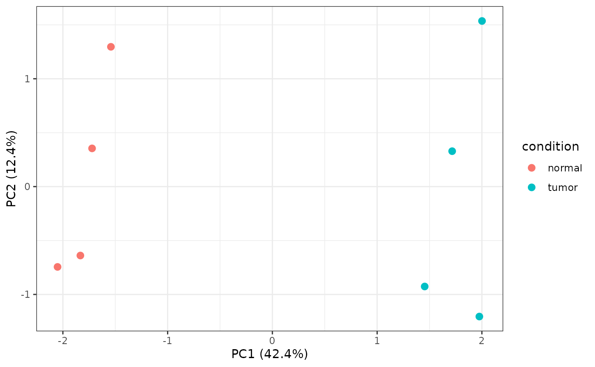

Bulk transcriptomics from QC to clinical association
Source:vignettes/bulk-transcriptomics.Rmd
bulk-transcriptomics.RmdShennong’s standalone bulk workflow keeps samples as the inferential
unit. The same feature-by-sample matrix and aligned sample metadata can
be supplied as a matrix plus data frame, a list, or a
SummarizedExperiment.
set.seed(83)
sample_data <- data.frame(
condition = factor(rep(c("normal", "tumor"), each = 4),
levels = c("normal", "tumor")),
batch = factor(rep(1:2, 4)),
time = seq(10, 45, by = 5),
event = rep(c(1, 0), 4),
row.names = paste0("sample_", 1:8)
)
counts <- matrix(
rpois(80 * 8, 30), nrow = 80,
dimnames = list(paste0("gene_", 1:80), rownames(sample_data))
)
counts[1:8, sample_data$condition == "tumor"] <-
counts[1:8, sample_data$condition == "tumor"] + 35Audit samples before modeling
sn_assess_bulk_qc() retains sample metrics, expression
quantiles, PCA, correlation, and robust outlier flags in one validated
result.
qc <- sn_assess_bulk_qc(counts, sample_data)
qc$tables$samples[, c("sample", "library_size", "outlier")]
#> # A tibble: 8 × 3
#> sample library_size outlier
#> <chr> <dbl> <lgl>
#> 1 sample_1 2404 FALSE
#> 2 sample_2 2433 FALSE
#> 3 sample_3 2405 FALSE
#> 4 sample_4 2309 FALSE
#> 5 sample_5 2733 FALSE
#> 6 sample_6 2741 FALSE
#> 7 sample_7 2734 FALSE
#> 8 sample_8 2553 FALSE
sn_plot_bulk_pca(qc, sample_data, color_by = "condition")
Validate the design and contrast
The contrast contract is always
c(variable, numerator, denominator). With integer counts,
method = "auto" chooses edgeR; normalized continuous input
chooses limma; a mixed-effects formula selects dream. Explicit DESeq2,
edgeR, limma, and dream choices remain available.
de <- sn_find_bulk_de(
counts,
metadata = sample_data,
design = ~ batch + condition,
contrast = c("condition", "tumor", "normal"),
method = "auto"
)
# Discover and retrieve the standardized evidence table.
names(de$tables)
head(de$tables$differential_expression)
sn_plot_bulk_de(de)Pathways, networks, and clinical models
Pathway scoring reports gene-set coverage before returning sample scores. WGCNA returns modules, eigengenes, power diagnostics, and module-trait associations. Cox models and general clinical associations can use either genes from the expression matrix or numeric columns from sample metadata.
pathways <- sn_score_bulk_pathways(
counts,
signatures = list(inflammation = paste0("gene_", 1:10)),
metadata = sample_data
)
pathways$tables$coverage
pathways$tables$scores
network <- sn_run_wgcna(counts, sample_data, traits = "condition")
network$tables$modules
network$tables$trait_associations
survival <- sn_run_survival(
counts, time = "time", event = "event",
features = c("gene_1", "gene_2"), metadata = sample_data
)
survival$tables$survival
sn_plot_survival(survival)sn_run_bulk() dispatches the same workflows through
workflow = "qc", "de", "pathway",
"network", or "survival". The explicit
functions are preferable in scripts because their required inputs are
easier to review.